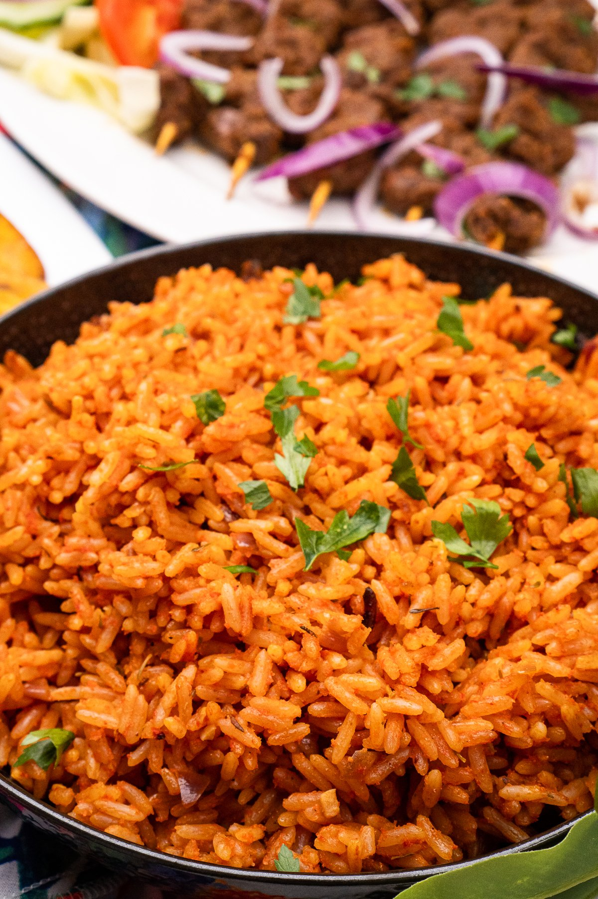

Jollof Rice

Jollof rice is a delicious royal dish originating in West Africa.
It is one of the most common West African dishes eaten in the regions of Nigeria, Ghana, Togo, Senegal, Gambia, Mali, Sierra Leone, Ivory Coast, Cameroun, and Liberia.
Although it is believed to have originated from the Wolof people in northwestern Senegal.
Jollof consists mainly of cooked rice and tomato stew flavored with spices such as thyme, scotch bonnet pepper, onions, and garlic.
The dish is a staple of West African cuisine, particularly that of Ghana, Nigeria, Senegal, and Gambia often eaten and enjoyed during holidays, weddings, birthdays, and other special events.
It is a very versatile dish, and it is usually made from scratch using rice, tomatoes, pimento peppers, tomato paste, scotch bonnet, onions, salt, and other spices.
This recipe for jollof rice can be customized in many ways to suit your tastes and preferences, you could add any of your favorite vegetables (diced carrots, green beans, sweet peas, or sweet corn).
It can be enjoyed with chicken, beef, lamb or fish.
Ingredients
- Long-Grain Rice
- Canned Tomatoes
- Fresh Tomatoes
- Bell Peppers
- Garlic
- Onion
- Ginger
- Chili's
- Chicken / Beef / Lamb / Fish
- Stock
- Thyme
- Curry Powder
- Bay Leaves
Steps
- Start by frying up the onions for 3 to 5 minutes.
- Stir in the tomato paste and fry for about 5 minutes.
- Add the ginger, chili's and garlic and cook along with the tomato paste for another two minutes.
- Add the blended peppers.
- Cook for about 15 to 20 minutes, depending on the water content.
- Add the thyme, curry powder, salt, white pepper and bay leaves.
- Add the rice and mix until every grain of rice is covered in sauce.
- Add the chicken stock.
- Reduce the heat to medium-low immediately and continue to cook until the rice is done, about 20 to 30 minutes.
- Serve with you protein of choice.
Credit